For proper operation the LoRa boat monitor requires a web browser with HTML5, JavaScript and Canvas, as supported by all actual browsers. Please check browser security settings in case of malfuntions.
Main Page
The main page provides buttons to access sub pages serving different purposes. The status bar displays copyright, version number and WLAN connection quality in percent.
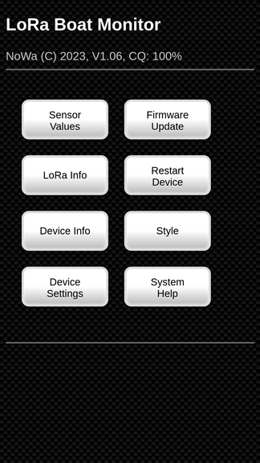
Sensor Value
This page shows all readings from the sensors. Depending on which sensors are active, the number of measured values displayed may vary.
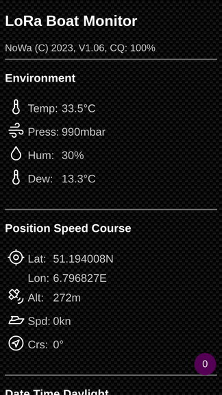
Environment
This shows all values from BME280 environment sensor.
Temp: Air temperature in °C or K
Press: Air pressure in mbar
Hum: Air humidity in %
Dew: Dewpoint in °C or K
Position Speed Course
Lat: Latitude geographic position
Lon: Longitude geographic position
Alt: Altitude on geographic position
Spd: Speed in kn
Crs: Course in degree
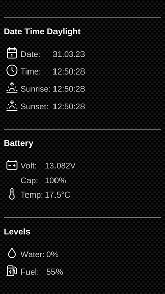
Date Time Daylight
Date: Date of day
Time: Actual time
Sunrise: Sunrise of day
Sunset: Sunset of day
Battery
Volt: Actual voltage in V
Cap: Current level of the battery
Temp: Battery temperature measured with a 1Wire sensor DS18B120
Levels
Tank levels of water and fuel measured with a 180 ohm level sensor.
Water: Water level in %
Fuel: Fuel level in %
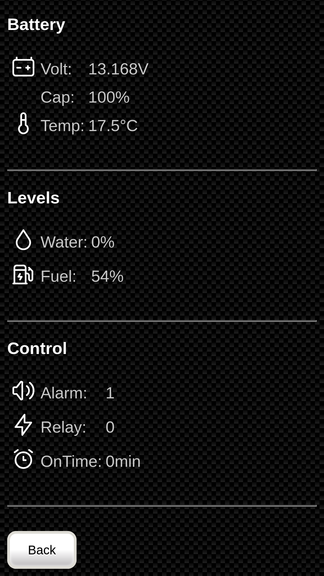
Control
Alarm: Status alarm input on/off
Relay: Status relay input on/off
OnTime: Duration of switching on
LoRa Info
This screen displays actual LoRa values.
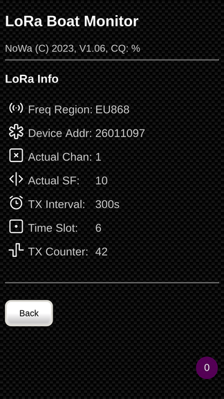
LoRa Info
Freq Region: Frequency region in which LoRa is used. Depending on the geographical region, different frequencies and transmission schemes are used.
Device Addr: Device address of the LoRa boat monitor.
Actual Chan: Actual used LoRa channel (1...8)
Actual SF: Actual used spreading factor for LoRa signal (7...12)
TX Interval: Transmit interval for LoRa telegrams in s
Time Slot: The transmission of LoRa telegrams is divided into 12 time slots. The time slot in which the transmission is currently active is displayed here. Depending on the operating mode, different spreading factors are used for each time slot.
TX Counter: Transmission counter since the start of the LoRa boat monitor. This counter is transmitted to the LoRa network. This can be used to detect whether telegrams have been lost. After a device restart, the counter is reset.
Device Info
This screen provides an overview of all relevant LoRa boat monitor data grouped in different sections.
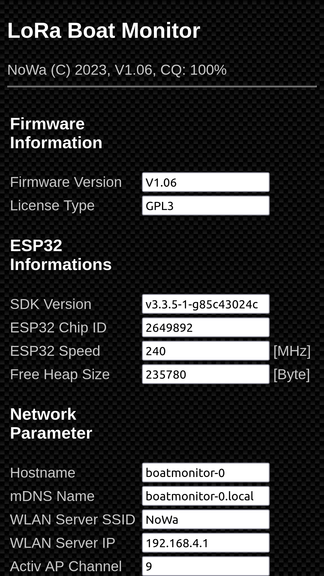
Firmware Information
Firmware Version Version of ESP32 real time kernel.
License Type GPL3.
ESP32 Informations:
SDK Version: Version of software development kit used to build the ESP32 real time kernel.
ESP32 Chip ID: Unique ID equivalent to a serial number.
ESP32 Speed: Current CPU speed.
Free Heap Size: Internal free memory (RAM) available for dynamic values and variables. In case of problems please check free heap size.
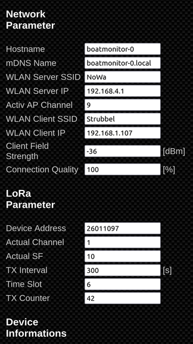
Network Parameter
Hostname: Hostname of the LoRa boat monitor. The hostname is a combination from name boat monitor and Sensor ID. You can using this name in the following URL: http://boatmonitor-0 for a device with the Sensor ID 0. If you using more than one device then select for each device a different Sensor ID (reffer Device Setings).
mDNS Name: Multicast DNS name. You find the LoRa boat monitor with this name in the local network. You don't need a IP address. The multicast DNS name is usable if the mDNS service is activated (refer Device Settings).
WLAN Server SSID: SSID of WLAN run by the Windserver.
WLAN Server IP: IP-adress of WLAN server run by the Windsensor.
Activ AP Channel: Actual used Access Point channel.
WLAN Client SSID: Client SSID of WLAN the Windsensor is connected to.
WLAN Client IP: Client IP adress in WLAN the Windsensor is connected to.
Client Field Strength: WLAN field strength in dBm. It indicates wireless connection quality.
Connection Quality: Quality value in percent for the wireless connection.
LoRa Parameter
Device Address: Device address of the LoRa boat monitor.
Actual Channel: Actual used LoRa channel (1...8)
Actual SF: Actual used spreading factor for LoRa signal (7...12)
TX Interval: Transmit interval for LoRa telegrams in s
Time Slot: The transmission of LoRa telegrams is divided into 12 time slots. The time slot in which the transmission is currently active is displayed here. Depending on the operating mode, different spreading factors are used for each time slot.
TX Counter: Transmission counter since the start of the LoRa boat monitor.
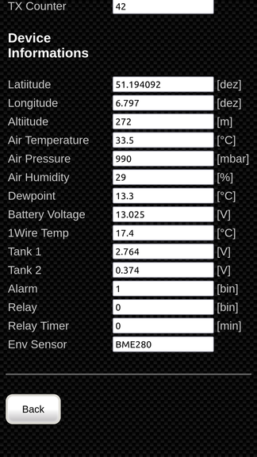
Device Information
Latitude: Latitude geographic position
Longitude: Longitude geographic position
Altitude: Altitude on geographic position
Air Temperature: Air temperature in °C or K
Air Pressure: Air pressure in mbar
Air Humidity: Air humidity in %
Dewpoint: Dewpoint in °C or K
Battery Voltage: Actual battery voltage in V
1Wire Temp: Temperature measured with a 1Wire sensor DS18B120
Tank 1: Level sensor for tank 1 as raw value in V
Tank 2: Level sensor for tank 2 as raw value in V
Alarm: Status alarm input on/off
Relay: Status relay input on/off
Relay Timer: Duration of switching on
Env Sensor: Type of environment sensor
Device Settings
Attention:
This screen holds passwords - it is advised not to call this page while connected to public networks. Password transmission may not be safe in a public environment.
This page permits changes to the LoRa boat monitor settings.
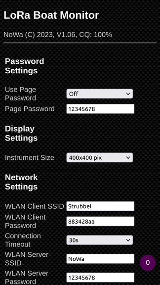
Password Settings
Use Page Pasword: Allows secure access via password to the web pages Device Settings, Firmware Update and Restart Device.
Page Password: Password to access the secure web pages.
A password must be entered when accessing the secured pages. Only upper and lower case letters and numbers may be used. Special characters are not allowed. The password must consist of 8 to 20 characters.
Display Settings
Instrument Size: Change the size of instrument for optimal viewing on the browser in use. The setting applies to all devices connected. Unfortunately individual layout per display unit is not possible due to ESP restrictions.
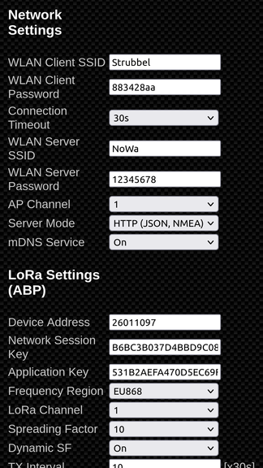
Network Settings
WLAN Client SSID: SSID of the external network used by the sensor to transmit raw data to OpenPlotter or other data servers.
WLAN Client Password: Password to access the external network used by the sensor to transmit raw data to data servers (e.g. OpenPlotter).
Connection Timeout: The wind sensor tries to establish a client connection until the timeout has expired. Notice: If no connection has been established, the web interface can only be reached after the timeout has expired. The timeout is useful when OpenPlotter and the wind sensor are switched on at the same time. The wind sensor starts faster and then tries to connect until the timeout expires. If the timeout is longer than the OpenPlotter's boot phase, the wind sensor can automatically log into the OpenPlotter's WLAN after switching on.
WLAN Server SSID: SSID of the wireless network created by the windsensor to provide the web interface. You can use a mobile phone or tablet to display wind data.
WLAN Server Password: Password of the wireless network created by the windsensor to provide the web interface.
AP Channel: Access Point channel for WiFi network. Attention! The WiFi channel can only be freely set if the device is not connected to another WiFi network (e.g. OpenPlotter) .If the wind sensor is connected to another WiFi network, its channel is used.
Server Mode:'HTTP (JSON/NMEA)' is the default value. The LoRa boat monitor provides a web interface with data formatted as JSON. This mode may also be used for other applications accepting JSON. In the same mode is it possible to transmit NMEA0183 data to applications like OpenPlotter on Port 6666. In this case the LoRa boat monitor serves as data server with OpenPlotter being the client.
With 'NMEA Serial' you can setup a RS232 serial connection for NMEA0183 data transmission by wired cable. The mode supports also a serial debug mode for hardware debugging. In this case select and change the settings in Serial Debug Mode.
'MQTT' Is reserved for future functions to connect to an MQTT server. Currently the function is not implemented.
'Diagnostic' The diagnostic mode is unused.
nDNS Service: Activate the mDNS service for the local network. The LoRa boat monitor supports a hostname (e.g. boatmonitor-0.local). You can connect the device with this name in the local network. The mDNS service supports also different network services for HTTP and NMEA0183 connections. In the navigation software AVnav you can very easy directly connect the wind sensor without any IP and port declaration as Zero-Config.
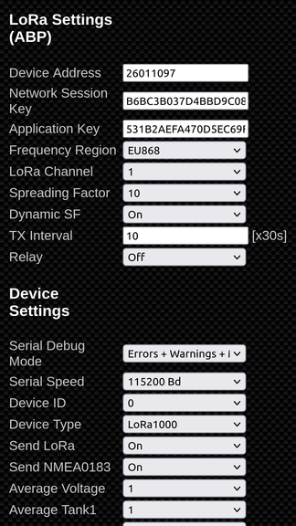
LoRa Settings (ABP)
Device Address: Device address of the LoRa boat monitor. The device address consists of 8 characters and must not be confused with the device EUI.
Network Session Key: Network session key for LoRa TTN V3 network. The key consists of 32 characters.
Application Key: Application key for LoRa TTN V3 network. The key consists of 32 characters.
Freq Region: Frequency region in which LoRa is used. Depending on the geographical region, different frequencies and transmission schemes are used. Currently only the European region EU868 with 868 MHz transmission and reception frequency range is used.
LoRa Channel: LoRa channel selction (1...8) without or with dynamic channel hopping.
Spreading Factor: Spreading factor selection for LoRa signal (7...10).
Dynamic SF: Selection for dynamic spreading factor hopping. For more details see: GitHub repository
TX Interval: Transmit interval for LoRa telegrams as mutible of 30s.
Relay: Manual opreation of relay.
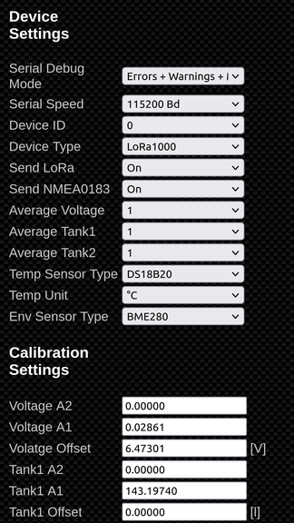
Device Settings
Serial Debug Mode: The Serial Debug Mode supports hardware debugging. You can monitor and control all Windsensor functions over a serial RS232 connection (RX,TX,GND). The output signal level is set to 3.3V TTL. Use a level shifter TTL/RS232-USB to connect with a PC. On PC side you can use a terminal program to display all ASCII debug information.
Serial Speed: Serial Speed determines the RS232 line speed.
Sensor ID: Unique ID of the LoRa boat monitor when multiple sensors are installed.
Device Type: Describes the type of LoRa boat monitor device. At present just LoRa1000 is available. Future versions may provide different sensors.
Send LoRa: Setting this value to 'true' enables LoRa data transmission. When set to 'false' data transmission will be stopped.
Send NMEA0183: If enabled then send LoRa boat monitor data as NMEA0183 telegrams.
Average Volatge: Factor for moving average calculation. Higher factors smoothen wind angle and speed values. Decrease the factor for more reactive values.
Average Tank1: Factor for moving average calculation. Higher factors smoothen wind angle and speed values. Decrease the factor for more reactive values.
Average Tank2: Factor for moving average calculation. Higher factors smoothen wind angle and speed values. Decrease the factor for more reactive values.
Temp Sensor Type: Temperature sensor type. Actual only supports the DS18B20. In future applications we consider providing other sensors.
Temp Unit: The selected unit will be used to display temperature.
Env Sensor Type: Environment sensor type. Actual supports BME280, VEdirect_Read, VEdirect_Write. With VEdirect the device can read and write VE.direct data from Victron. If VEdirect_Write is activated, the device behaves like a Victron battery monitor BMV-712 smart. All data read from VE.direct is also exported via NMEA0183.
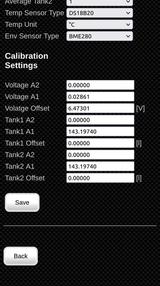
Calibration Settings
If necessary, the measured values can be calibrated with the following free parameters to improve the measurement accuracy. The following correction function is used for this: y=A2*x*x+A1*x+Offset. A2=0.0, A1=1.0 and Offset=0.0 must be set for a calibration. The measurement data are then recorded simultaneously with a reference measuring device and entered in an Excel chart. The measurement data are provided with a linear or quadratic fit. The fit parameters are then the correction data for A2, A1 and the offset. The horizontal axis contains the uncorrected readings and the vertical axis contains the corrected readings.
Fig.: Sample for a linear fit (A2=0.0, A1=0,8413, Offset=1,1786)
Voltage A2: Calibration slope is a second factor for a quadratic fit. Set A2=0.0 for a linear fit. The default value is 0.0.
Voltage A1: Calibration slope is a first factor for a linear fit with which the measured values can be increased or decreased. The default value is 0.02861.
Voltage Offset: Calibration Offset is a fixed value which is added to the measurement data. The default value is 6.47301.
Tank1 A2: Calibration slope is a second factor for a quadratic fit. Set A2=0.0 for a linear fit. The default value is 0.0.
Tank1 A1: Calibration slope is a first factor for a linear fit with which the measured values can be increased or decreased. The default value is 143.19740.
Tank1 Offset: Calibration Offset is a fixed value which is added to the measurement data. The default value is 0.0.
Tank2 A2: Calibration slope is a second factor for a quadratic fit. Set A2=0.0 for a linear fit. The default value is 0.0.
Tank2 A1: Calibration slope is a first factor for a linear fit with which the measured values can be increased or decreased. The default value is 143.19740.
Tank2 Offset: Calibration Offset is a fixed value which is added to the measurement data. The default value is 0.0.
Firmware Update
This page allows updating the LoRa boat monitor firmware in two variants. The latest actual firmware is displayed. Download the latest firmware and save it. Then select the new firmware file and click button 'Update Firmware'. Please be careful to enter the right filename extension (bmb) for firmware update. Success status will be displayed upon completion. OK indicates a successful update. Otherwise an error information will be shown.
Caution! By loading an incorrect or corrupted file the LoRa boat monitor will not work and may require a manufacturer service. The device reboot automatically after successful firmware update.
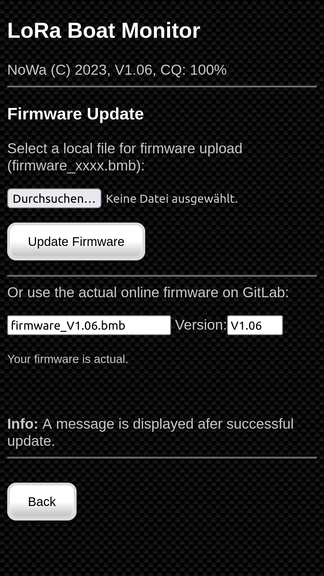
Restart Device
Allows the wind sensor to be restarted. Then you get to the start page.
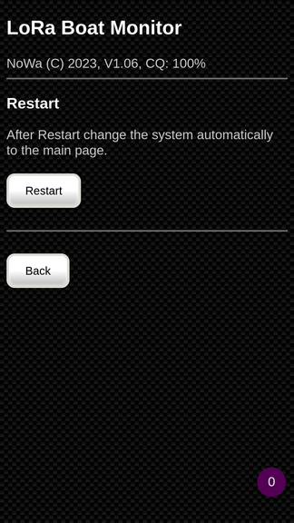
Style
You can toggle between three page styles. Click the button again to change to the next style. Beware that all changes will apply to all displays connected.
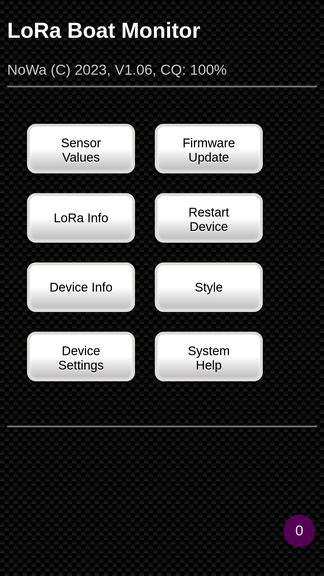
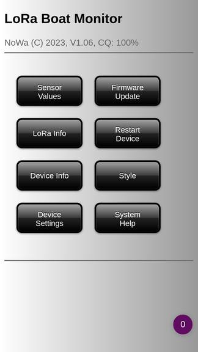
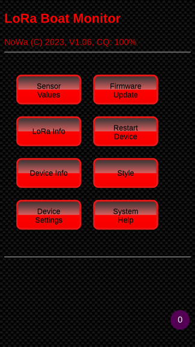
System Help
Displays this help text. If you require more information, please refer to the project page on GitHub.